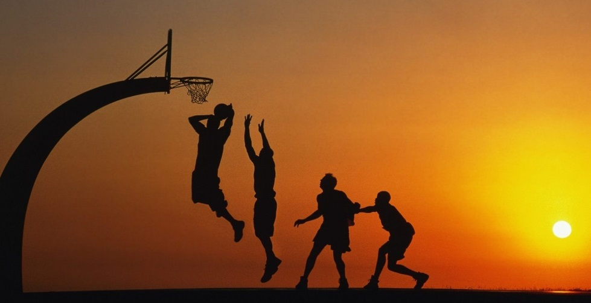
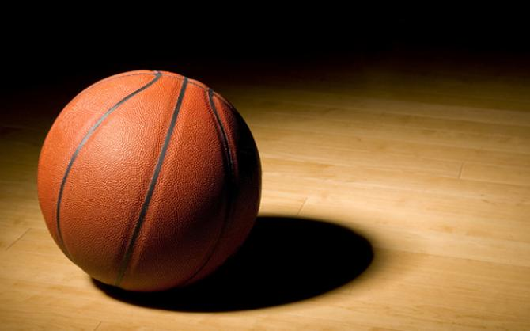

ir abajo
Ir a las reglas del baloncesto
Baloncesto

El baloncesto, basquetbol o básquetbol (del inglés basketball; de basket, 'canasta', y ball, 'pelota'),N. 1 o simplemente básquet,1 es un deporte de dos equipos, formados por cinco jugadores cada uno, ellos tienen que intentar anotar puntos, también llamados canastas o dobles y/o triples introduciendo un balón en un aro colocado a 3,05 metros del suelo del que cuelga una red, lo que le da un aspecto de cesta o canasta.
Las federaciones nacionales de los países hispanohablantes del Caribe y Centroamérica, Guatemala, y Guinea Ecuatorial, lo denominan baloncesto. Las federaciones nacionales de los demás países de América del Sur/sudamericanos de habla hispana lo denominan básquetbol.2 La Asociación panamericana (FIBA) utiliza en español la denominación baloncesto, mientras que la Asociación sudamericana (ABASU) utiliza la denominación básquetbol. También es llamado basquetbolN. 1 o básquet, sobre todo en Guatemala, Argentina y Perú, por la castellanización de su nombre original en inglés: basketball.3
Fue inventado por James Naismith, un profesor canadiense de educación física, en diciembre de 1891 en la YMCA de Springfield, Massachusetts, Estados Unidos. Se juega con dos equipos de cinco personas, durante 4 períodos o cuartos de 10 (FIBA),4 o 12 minutos cada uno (NBA). Al finalizar el segundo cuarto, se realiza un descanso, normalmente de 15 a 20 minutos según la reglamentación propia del campeonato al cual el partido pertenezca.
También existe una modalidad, fundamentalmente para discapacitados, en la que se juega en silla de ruedas (baloncesto en silla de ruedas), prácticamente con las mismas normas que el baloncesto habitual.
Principales reglas establecidas por Naismith

Naismith diseñó un conjunto de trece reglas para el incipiente deporte.6 Estas eran:
- El balón puede ser lanzado en cualquier dirección con una o ambas manos.
- El balón puede ser golpeado en cualquier dirección con una o ambas manos, pero nunca con el puño.
- Un jugador no puede correr con el balón en las manos. El jugador debe lanzarlo desde el lugar donde lo toma.
- El balón debe ser sujetado con o entre las manos. Los brazos o el cuerpo no pueden usarse para sujetarlo.
- No se permite cargar con el hombro, agarrar, empujar, golpear o zancadillear a un oponente.
- La primera infracción a esta norma por cualquier persona contará como una falta, la segunda lo descalificará hasta que se consiga una canasta, o, si hay una evidente intención de causar una lesión, durante el resto del partido. No se permitirá la sustitución del infractor.
- Se considerará falta golpear el balón con el puño, las violaciones de las reglas 3 y 4, y lo descrito en la regla 5.
- Si un equipo hace tres faltas consecutivas (sin que el oponente haya hecho ninguna en ese intervalo), se contará un punto para sus contrincantes.
- Los puntos se conseguirán cuando el balón es lanzado o golpeado desde la pista, cae dentro de la canasta y se queda allí. Si el balón se queda en el borde y un contrincante mueve la cesta, contará como un punto.
- Cuando el balón sale fuera de banda, será lanzado dentro del campo y jugado por la primera persona en tocarlo. En caso de duda, el árbitro lanzará el balón en línea recta hacia el campo. El que saca dispone de cinco segundos. Si tarda más, el balón pasa al oponente.
- El árbitro auxiliar, "umpire", sancionará a los jugadores y anotará las faltas, avisará además al "referee" (árbitro principal, véase el siguiente punto) cuando un equipo cometa tres faltas consecutivas. Tendrá poder para descalificar a los jugadores conforme a la regla 5.
- El árbitro principal, "referee", jugará el balón y decide cuando está en juego, dentro del campo o fuera, a quién pertenece, y llevará el tiempo. Decidirá cuando se consigue un punto, llevará el marcador y cualquier otra tarea propia de un árbitro.
- El tiempo será de dos mitades de 15 minutos con un descanso de 5 minutos entre ambas.
- El equipo que consiga más puntos será el vencedor.
Mire las posiciones principales
ir arriba